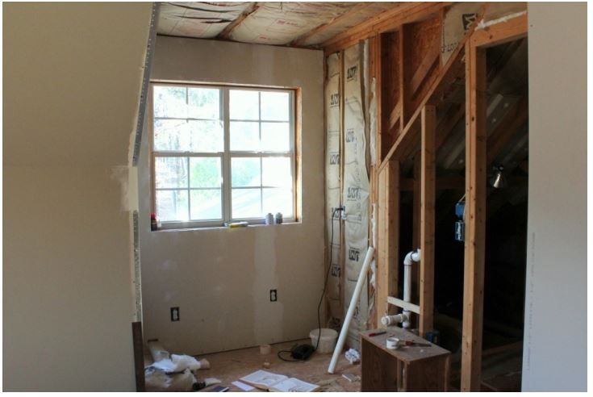
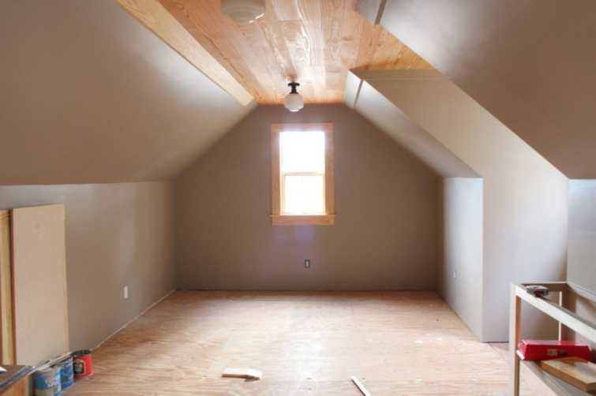

.png)
.PNG)
.PNG)
.PNG)
.PNG)
.PNG)
.JPG)
.JPG)
.PNG)
.PNG)


Do you see that chair up there by the fireplace? ¬†Well, that is “my” chair, and the photo was taken early Christmas morning. That is my filled-to-the-top stocking beside the pillow. ¬† I’ll tell you about the piece of wood in the chair in a minute, but first I need to show you a few things…
If you were reading here back in March, you may remember a post about our room over the garage (pictured above) that was titled Inspired and Confused. ¬†I told you about the room and my dilemma in planning both its use and its decor. ¬†We did come to the conclusion that it will be my husband’s office space, and he has been working on it ever since. ¬†I thought you might like to see where we are with it today. It is still not finished, but it is getting closer.¬†It has been painted…three different times because I could not make up my mind. üôÅ ¬†I finally went with my tried and true Brandon Beige from Benjamin Moore. As you can see, there is one small piece of trim at the ceiling that needs to be put up, and the left side trim needs painting. ¬†The window trim will stay natural, and after the floor is finished the baseboards will go in. I will probably paint them. (The “flooring” you are seeing there is plywood subflooring.)
The cabinets in the small “kitchenette” area have been framed out.
 My plans are to put open shelves to hold dishes above the sink area.
My plans are to put open shelves to hold dishes above the sink area.
We have already “inherited” (from our son) some furniture that will go in the room. ¬†Here is what we have so far:
A sofa almost like this one from World Market (but ours is longer.)
This media cabinet from World Market
And this desk also from World Market
There is a small round dining table to go near the kitchenette area,
and 4 dining chairs go with it.
Now remember that piece of wood in the chair at the beginning of this post? My husband and I normally give each other a nice gift for Christmas. ¬†Our November this year was crazy busy, and we have college tuition and Christmas expenses that are budget killers at this time of year, so we had initially said that we would just stop progress on that room for awhile…but then….I got this idea. ¬†Why not give each other heart pine floors for that room for our Christmas gifts to each other? And that is just what we did. ¬†So the piece of wood in the chair is a piece of that flooring that “Santa” brought to us. üôÇ ¬†And my husband worked hard to get it all down as quickly as he could. ¬†Here is how it all looks now…
and it is even installed in the bathroom (Sorry for the dark photos. It is hard to take a picture in there!)
It will be finished sometime soon…not sure with what. ¬†We have had a couple of different recommendations. ¬†I do know that I want to use these sconces on the walls of the bathroom up there. üôÇ
We are getting close to the fun-to-decorate part of the room. ¬†My first plan had been to go with a green (much like what we have in the playroom) for the pillow and drapery fabrics, but then I changed my mind. (Of course.) ¬†I had finally decided on using a gold print for the drapes and pillows, painting the dining chairs and kitchen cabinets a very light gold color, and using this rug…
But then…
I started taking down Christmas things today in a few places, and I began redecorating with…blue…which I do not normally use a lot of. And then… I looked at Pottery Barn’s new spring line on the computer…and oh dear…be still my heart! ¬†Wouldn’t a chair like this look great in that room? (Or a knock off of it if I can’t get it on sale.)
And there was this rug…sigh. I know it is a floral, but with all the dark colors and wood, a floral would be fine.
Here is how they describe the color for their new spring line:
Peaceful, comforting, orderly. ¬†I could deal with that. ¬†Couldn’t you? ¬†So now… I am back to being confused again, but I still have some time before I make the final decision. ¬†The real decision is what to paint the cabinets in the kitchen, and that is why I have to eventually commit to some color (before my husband has me committed. üôÇ ) I might just paint them the same color as the walls to make things simpler. ¬†My husband has no preference when it comes to this, and he is happy to have the big space for his use.
And that is where we stand with the room now.  You know it will change again!
Since I have never lived in a house with a second floor, I am loving the view from up there. You can see the big tree that all my guys took down before Christmas is still waiting to be moved. ¬†My husband broke his ax when he was doing this, so I bought him a new one for a Christmas present. ¬†(I know I wasn’t supposed to buy him another gift since the floors were our presents, but it seemed like such a good idea.) I hid it in a place that I don’t normally hide things in, and guess who forgot about pulling out that gift on Christmas morning?! ¬†I told you things have been crazy around here! ¬†I didn’t even remember it until I started cleaning things up yesterday.
(Oh yes, I need this break!)
 I hope you have a great weekend!


.PNG)
[…] Source […]
Kelly,
Funny, I was just thinking about your room over the garage. I knew you hadn’t mentioned it in a while. I like what you’ve accomplished already and the colors you’ve been leaning towards. How exciting. You must show us the end result…with maybe a few things before the final decor is complete.
xo,
Karen
Everything looks wonderful. You are lucky to have such a handy husband! If you are asking… I say go with blue in the office. It’s fun to try a new color palette – and since the room doesn’t really need to blend perfectly with the rest of the house (since it’s off on it’s own) you can go a little nuts. We all get into ruts (all stripes, all floral, all one color or whateve) and those blue colors look like they would be a perfect fit! Enjoy your blog very much!
I just want to thank you so much for all your postings. They have inspired me so much! Happy New Year to you and your family. I am already looking forward to your next one.
Cool room! I sometimes wish we had a second floor, just for the views!
Funny, my daughter found the gift she had purchased for her uncle last year, in her box of ribbons and wrap, so she gave it to him this year! See, it happens to all of us! I STILL can’t find my jewelry box after moving in 2007 – only thing of importance in it was my original setting of my wedding ring. I had taken the large stone and had it placed in a new setting, but left the two tiny diamonds in the old set. Oh well, they may or may not turn up someday! Happy New Year!
Just came across your blog today…You remind me of Helen Hunt . (adorable by the way)..I love what yor doing upstairs! I need your entryway buffet…would you mind sharing where you purchased it from?
Happy New Year!!!
LOVE the floors. Looks like you have a great plan. I know that whatever you choose the room will look fabulous. So love the indigo blue!
Happy New Year!
Kelly, I love the floor. We usually do a thing for the house or something like that as our Christmas gift. This year I ordered me a t.v. on black Friday. I got tired of not having an HD t.v. in the sunroom where I am all the time. I got the PB catalog the other day and saw all the blue. Gorgeous stuff and I am sure you will figure it all out.
My Mother had a blue wing back chair exactly like that long ago when she was into blues. I love the dark indigo blue , always have! My daughter loves turquoise and cobalt blue. It will be hard to choose your new colors but blue and gold sound pretty together to me. Most all colors look great in the PB catalog don’t they? Good luck!
That room is looking wonderful up there! You’ve made a lot of progress from our point of view. I can already see your beautiful choices at work. The floor was a great idea. My husband and I gave each other a new stereo receiver and had an electrician install speakers in the ceiling. üôÇ
I adore the new line at Pottery Barn too. We have a room upstairs that I call Spencer’s (my oldest son) even though he’s never lived in this house. We are going to plank one of the walls and I might have to work some of that line into the room.
I’m loving your new room. The blue color is also beautiful, however I’m a “red girl”. I do love my red, so if I were the one decorating I know the color red would have to be there somewhere. Touches of red along with that beautiful blue red would be outstanding. Just saying…..What do you think???
What a gorgeous room that’s going to be…I can see it now….no matter what you decide! I’m a blue lover from way back…so it’s nice to see so many different options. Good call on the floors for Christmas presents….hubby and I didn’t exchange either…we are saving up for our 40th anniversary trip to…? It’ll be fun following along….seeing what you will do in your room…and watching you spend the money! üòâ
I had to laugh when you said you’ve painted the room three times. I always fret over new paint colors and my husband always says that if I don’t like it, we can repaint it. I’ve never had to test that, but if I did, my suspicion is that he would tell me I was on my own. Ha!
Love the new floors….and BOTH of the rugs. Hard decision indeed!
no matter what you do it will be beautiful!!! love your home!!
Oh my, look at the secret you been keeping. I love it and am green with envy. We too have a bonus room above our garage but have yet to finish it. I was just remarking to my daughter some ideas I have for it. Now you have stoked my fire all the more. When we first built, we were trying to keep costs down, so we did not finish the room. So as it goes with raising four children and now just on the tale end of college for the last one, I am biting at the bit to finally finish ours off as well. Thanks for the inspire and I can’t wait to see how you decorate the space. I am a traditionalist and love wing chairs. Between the fabric and the nail head detail, that Pottery Barn chair would be so lovely. Can’t wait to see what you decide.
Hi Kelly, How fun to see the progress on your room! Love the blue and the view out of your window. Hope you get a chance to rest a little before the new year!
Still loving the style of your home… and that blue…I love it. It may just have to feature in my living room when I get to it this year. Happy New Year to you!
Kelly, that room looks great! It is amazing what you and your husband are all building yourself in there!! Wow!
And I love that dark blue! I actually love it so much it made me think whether it wouldn’t look good in our bedroom. üòâ Getting ideas again.
And about forgetting a Christmas present: I’m still wondering where I put this one CD I was going to give my husband. Tis the Season to go crazy…
Hope you get to enjoy some quiet relaxed days!
Kelly, I love the room so far. I can’t wait to see what all you do up there. I hope you get some much needed down time. I am getting some much needed reading, grading and entering done. It is so nice to have some down time at home with my daughter as well.
I wish I had a garage and a bonus room. Your’s looks like it is coming together pretty well! Love the floors! I am waiting for all mine to go back to college before I get started with some redecorating. I have enjoyed them being home, so I am in no hurry to get started. lol Beside, I’m like you. I’m confused and can’t decide what colors I want to go with. lol Hope you enjoy the rest of your break and Happy New Year to you and your family!
Have loved seeing your home all beautifully decorated for Christmas!! I hope that your family had a wonderful celebration. Your bonus room is looking lovely. I have 7 grandchildren, so mine is purely a toy room right now. The heart pine floors are gorgeous (what a perfect Christmas gift). I really like the blue with the Brandon Beige and heart pine floors, but based on your other decorating projects, it will be great with whatever color you choose. Enjoy the rest of your break!
Hi Kelly, we have a bonus room too. When my hubby saw the model of our home the first thing he feel in love with was the bonus room for his TRAINS! he has a very large collection and they would be a fabulous display up there. Hopefully this coming year he can get to that, we’ll see. Your room is going to be awesome. I ADORE blue, I have been collecting blue and white porcelains for about 30 years now. XO, Pinky
Oh heavens! Blue— my favorite color!! Perfect for that room! This is exciting!! I know your husband is going to love having a place to call his own– wonder if he might let you have a small space for your sewing/craft area?!:) Keep us posted? I’m helping with a bridal shower themed ” Snowflakes and butterflies” having found a quote that states ” snowflakes are winter’s butterflies!” I’m making a slow cooker of Snowflake White Hot Chocolate with a topping of whipped cream and blue snowflake sprinkles and my daughter is doing a white chocolate fountain. Sounds like your kind of party huh? All that whipped cream!! üôÇ I don’t think I know anyone who has ever given her husband an ax for Xmas!! Hmm?:)bet he loved it!
That room will be wonderful…your husband is a lucky man, I think I would have claimed it for myself. I do love the blue chair, I don’t use much blue, but I like pops of cobalt or indigo around a room. The floor looks great and I like the mini kitchen, will your husband keep it tidy? My husband and I “gave” each other a redo of our bathroom this Christmas…it’s not finished, but I think it may be one of my all-time favorite gifts. Happy New Year!!!!
Kelly, the room above the garage is turning out beautifully!!! I loved that gold rug and thought it would be perfect (I am still leaning that way a bit). But I’ve always loved and used blues in my homes so when Pottery Barn revealed it’s Spring line I was so happy to see deep blues, denim blues, etc. I’m no help, I know. I am going to look in to your favorite wall paint color and see how it would look in our home. I intended to paint the office Revere Pewter, my favorite gray/beige. I think I’ll do a test of the two colors. Thanks for the idea!
The room is already looking great and I love the blue things from PB! Especially that rug!! You have such a knack- please come redo my house!!
You are going to love that bonus room! We have one that our son finished as a mancave and we love it. I love your floors, the ceiling and the color you chose to paint the walls. I can’t wait to see how you decorate it. I will probably need to redecorate ours once I see what you do.